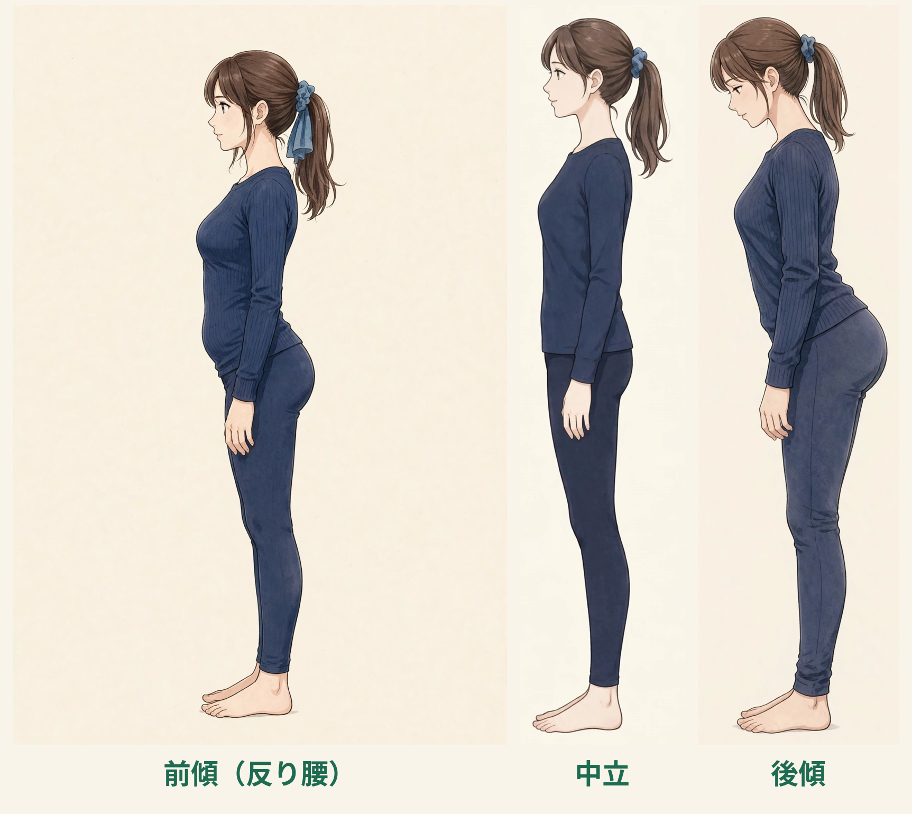

体の土台である骨盤の傾きが、姿勢全体にどう影響するかを解説します
骨盤は、上半身の重さを受け止めて脚へ伝える「土台」です。この土台の傾きが変わると、その上に積み上がる背骨・肩・頭の位置も連動して変わります。
姿勢の悩みを考えるとき、最初に確認したいのが骨盤の傾きです。このページでは、骨盤の基本的な構造、前傾・後傾で何が起こるか、日常のどんな習慣が傾きを作るのかを順に解説します。
骨盤は、左右の寛骨と仙骨・尾骨からなる輪のような骨格で、背骨の下端と両脚の付け根をつないでいます。立つ・座る・歩くといった動作のたびに、上半身の重さは骨盤を通って脚へ伝わり、地面からの力は逆向きに骨盤へ戻ってきます。土台が傾けば、その上の積み木が傾くのと同じで、骨盤の傾きは背骨のカーブや肩・頭の位置に波及します。
骨盤の傾きを決めるのは、骨盤につく筋肉の引っ張り合いです。前側では腹筋と太ももの前の筋肉、後ろ側では背中の筋肉とお尻・太ももの裏の筋肉が、綱引きのようにバランスを取り合っています。どちらかの引く力が強くなりすぎたり弱くなったりすると、骨盤は前か後ろへ傾いていきます。
骨盤の傾きは、大きく3つの状態に分けられます（図1）。

図1：骨盤の傾きの3タイプ。前傾では腰のカーブが強くなり、後傾では背中が丸くなります。
骨盤が前に傾いた状態です。腰のカーブ（前弯）が強くなり、お尻が後ろへ突き出て、下腹が前に出て見えやすくなります。太ももの前の張りや、腰の重さを感じやすいタイプです。ヒールの高い靴を履く機会が多い方、腹筋とお尻の筋肉の働きが弱くなっている方に目立ちます。
骨盤がほぼ水平に保たれた状態です。前後の筋肉のバランスが取れていて、上半身の重さが骨盤の中心を通ります。姿勢の評価では、この中立に近い状態が一つの目安になります。
骨盤が後ろに傾き、お尻が下がって背中が丸くなった状態です。猫背と一緒に起こることが多く、座り姿勢が長く続く生活で作られやすいタイプです。太ももの裏が縮み、お尻の筋肉が働きにくくなっていることが背景にあります。
どの習慣も、1日で姿勢を変えるものではありません。毎日少しずつ繰り返されることで、筋肉の引っ張り合いが偏り、傾きとして固定されていきます。逆に言えば、日常の使い方を見直すことが、傾きを戻す方向への第一歩になります。
前傾では下腹の出方と太ももの前の張りが目立ち、後傾ではお尻の下がりと背中の丸みが目立ちます。どちらも体重の変化とは別に起こるため、「太ったわけではないのにラインが変わった」と感じる背景には、骨盤の傾きが隠れていることが少なくありません。当サロンでは、施術前に骨盤の傾きと姿勢のラインを一緒に確認し、傾きの方向に合わせて整える順番を決めています。
骨盤の傾きは、前後につく筋肉の引っ張り合いで決まります。前傾させる方向に働くのは、太ももの前（大腿四頭筋・腸腰筋）と背中の筋肉（脊柱起立筋）です。後傾させる方向に働くのは、お尻（大殿筋）と太ももの裏（ハムストリングス）、そして腹筋です。
前傾が強い方では、太ももの前と背中が張り、お尻と腹筋が弱くなっていることが多く、後傾が強い方ではその逆の組み合わせが見られます。つまり骨盤の傾きは、骨そのものの形よりも「筋肉のバランスの結果」として現れている側面が大きいのです。施術で骨を直接動かすのではなく、張っている筋肉をゆるめ、弱くなっている筋肉が働きやすい状態を作ることが、傾きを中立へ戻す方向の働きかけになります。
骨盤の傾きは、立っているときだけでなく座っているときにも作られます。椅子に浅く座って背もたれに寄りかかる姿勢は、骨盤が後ろへ倒れた「仙骨座り」と呼ばれる状態で、長時間続けると後傾の習慣が固定されやすくなります。逆に、反らせるように意識しすぎる座り方は前傾を強め、腰への負担が増えます。
目安は、座骨（座ったときに当たる骨盤の下の骨）で体重を受けるように深く座り、骨盤を立てることです。足裏全体が床につく椅子の高さも大切です。仕事の合間に立ち上がって歩くことは、傾きのリセットにも、むくみの予防にもつながります。
当サロンでは、施術前に横から見た姿勢のライン（専門解説「美容整体とは」の図1）と合わせて、骨盤の傾きの方向を確認します。前傾・後傾のどちらが強いかで、ほぐす部位と順番が変わるためです。施術後は、傾きを保つための座り方や、弱くなっている側の筋肉を使う簡単な動きをお伝えしています。
骨盤の傾きは、歩き方にも現れます。前傾が強い方は、太ももの前で脚を引く歩き方になりやすく、お尻の筋肉が使われにくい歩幅の小さい歩き方になりがちです。後傾が強い方は、背中が丸まったまま脚を前に出す歩き方になり、歩幅が狭く、疲れやすい歩き方になります。
歩くことは、骨盤まわりの筋肉を使う最も身近な運動です。歩幅を少し広げて、お尻の筋肉で体を押し出す感覚を持つだけでも、弱くなりやすい大殿筋への刺激になります。傾きのケアは、施術の時間だけでなく、毎日の歩行の積み重ねでも進みます。
「骨盤が開いているから太る」「骨盤のずれが万病の元」といった表現を目にすることがあります。骨盤の傾きや左右差は確かに姿勢と関係しますが、それだけで体重や病気が決まるものではありません。また、骨盤の骨そのものが大きくずれるというより、筋肉のバランスと関節の動きの範囲の中で、傾きとして現れていると考える方が実態に近い説明です。
当サロンでは、骨盤の状態を大げさに表現せず、確認できる範囲（傾きの方向、姿勢のライン、筋肉の張り）でお伝えしています。仕組みを正しく知ることが、過度な不安を持たずにケアを続ける助けになります。
当てはまる項目は、傾きの方向を知る手がかりです。前傾と後傾が混ざって現れることもあり、その場合は背骨のカーブ全体で見ていく必要があります。施術前の確認では、このような日常の感覚も含めて状態をうかがいます。
前傾の傾向がある方は、お尻と腹筋を使う意識が役立ちます。立っているときに、おへその下に軽く力を入れて、お尻を少し締める。それだけで骨盤は中立方向へ動きます。後傾の傾向がある方は、太ももの裏のストレッチと、座骨で座る習慣が役立ちます。椅子に深く座り、骨盤を立て直す動作を1日に何度も繰り返すことが、後傾の固定をほどくきっかけになります。
どちらの場合も、1回の大きな努力より、毎日の小さな繰り返しが姿勢を作ります。施術はその繰り返しが実を結びやすい体を作る時間として位置づけています。
骨盤の傾きは、お尻の位置と脚のラインにも影響します。前傾ではお尻が上がって見える一方で太ももの前が張り、後傾ではお尻が下がって太ももの裏が縮みます。ヒップラインや脚の見え方が気になる場合、体重や脂肪の前に、骨盤の傾きを確認する価値があります。当サロンでは、ヒップラインやO脚のお悩みでも、まず骨盤の状態から確認を始めます。
日常の立ち方でも、骨盤への負担は変わります。片脚に体重を乗せる「休め」の姿勢は、骨盤の左右差を作ります。電車を待つ間や家事の合間に、両足に均等に体重を乗せ、つま先と膝の向きをそろえる。それだけでも、骨盤まわりの筋肉の使われ方は変わってきます。
Q. 骨盤のゆがみと傾きは同じですか？
A. 近い意味で使われますが、このページでは前後の傾き（前傾・後傾）を中心に説明しています。左右の高さの違いや開きなども含めた全体のバランスを指して「ゆがみ」と呼ぶことが多いです。
Q. 骨盤の傾きは自分でチェックできますか？
A. 壁に背中をつけて立つ方法が目安になります。腰と壁の間に手のひらがすっぽり入る場合は前傾の傾向、背中全体が壁について腰の隙間がほとんどない場合は後傾の傾向があります。あくまで目安としてご活用ください。
Q. 骨盤矯正を受ければ傾きは戻りますか？
A. 施術で筋肉のバランスを整えると傾きは動きやすくなりますが、姿勢は日常の使い方で作られるため、座り方や立ち方の見直しと組み合わせることが大切です。回数や期間の断言はできません。
Q. 産後は骨盤が傾きやすいですか？
A. 妊娠と出産を経ると、骨盤まわりの靭帯や筋肉に負担がかかり、傾きや開きの感覚が出やすくなります。無理のない範囲でのケアと、日常動作の見直しが大切です。
解説と施術は、施術歴30年・鍼灸師の資格を持つ平賀建人が担当します。登録販売者・アロマセラピスト・パーソナルトレーナーの知識も活かし、体の仕組みをできるだけ分かりやすくお伝えすることを心がけています。
この記事は専門解説シリーズの1本です。料金やご予約についてはトップページをご覧ください。